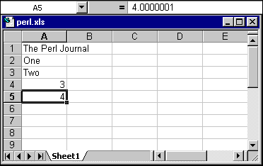
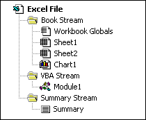

| Resources: |
|
Spreadsheet::WriteExcel ................................................................... CPAN OLE::Storage ................................................................................... CPAN Win32::OLE ..................................................................................... CPAN XML spces for Excel ................. http://msdn.microsoft.com/library/officedev/ Gnumeric ............................................................... http://www.gnumeric.org HTML::TableExtract ........................................................................ CPAN Excel SDK newsgroup .............................. news://microsoft.public.excel.sdk OLE Compound File ..... http://user.cs.tu-berlin.de/~schwartz/pmh/guide.html Herbert ........................................ http://user.cs.tu-berlin.de/~schwartz/pmh/ Filters .................................................. http://arturo.directmail.org/filtersweb/ xlHtml ....................................................................... http://www.xlhtml.org/ |
One of Perl's great strengths is the ability to filter data from one format into another. Data goes in one end of a Perl program and miraculously comes out the other end as something more useful. Your Sybase file goes into Perl counselling and after a few short sessions comes out feeling like a brand new Oracle file.
However, not all file formats are readily accessible. Certain proprietary file formats, and in particular binary files, can be difficult to handle. One such format is the Microsoft Excel spreadsheet file.
Excel is the spreadsheet application at the heart of the Microsoft Office suite. It is a popular tool for data analysis and reporting, and even though it is only available on Windows and Macintosh platforms there is often a requirement to produce Excel compatible files on Unix platforms. (Several rumors and some evidence of a Linux port of Microsoft Office have recently come to light on Slashdot.)
This article describes Spreadsheet::WriteExcel, a cross-platform Perl module designed to write data in the Microsoft Excel binary format. It highlights the fact that although Perl is most often associated with text files, it can readily handle binary files as well. This article also looks at alternative methods for producing Excel files and suggests some methods for reading them.
A single Excel file is generally referred to as a workbook. A workbook is composed of one or more worksheets, which are pages of data in rows and columns. Each row and column position within a workbook is referred to as a cell.
Spreadsheet::WriteExcel creates a new workbook to which you can add new worksheets. You can then write text and numbers to the cells of these worksheets. The following Perl program is a simple example:
#!/usr/bin/perl -w
use strict;
use Spreadsheet::WriteExcel;
# Create a new Excel workbook called perl.xls
my $workbook = Spreadsheet::WriteExcel->new("perl.xls");
my $worksheet = $workbook->addworksheet();
# Write some text and some numbers
# Row and column are zero indexed
$worksheet->write(0, 0, "The Perl Journal");
$worksheet->write(1, 0, "One" );
$worksheet->write(2, 0, "Two" );
$worksheet->write(3, 0, 3 );
$worksheet->write(4, 0, 4.0000001 );
Figure 1: Example file Written with Spreadsheet::WriteExcel

What is happening here is that we are using the Spreadsheet::WriteExcel module to create a variable that acts like an Excel workbook. We add a single worksheet to this workbook and then write some text and numbers. Figure 1 shows how the resulting file looks when opened in Excel.
The Spreadsheet::WriteExcel module provides an object-oriented interface to a new Excel workbook. This workbook is an object (a variable) that acts as a container for worksheet objects (more variables), which themselves provide methods (functions) for writing to their cells.
The primary method of the module is the new() constructor, which takes a filename as its argument and creates a new Excel workbook:
$workbook = Spreadsheet::WriteExcel->new($filename);
The workbook is then used to create new worksheets using the addworksheet() method:
$worksheet = $workbook->addworksheet($sheetname);
If no $sheetname is specified, the general Excel convention for worksheet naming will be followed: Sheet1, Sheet2, and so on. The worksheets are stored in an array called @worksheets which can be accessed through the workbook object.
In a multi-sheet workbook you can select which worksheet is initially visible with the activate() method.
The worksheet objects provide the following methods for writing to cells:
write($row, $column, $token)
write_number($row, $column, $number)
write_string($row, $column, $string)
The write() method is an alias for one of the other two write methods. It calls write_number() if $token looks like a number according to the following regex:
$token =~ /^([+-]?)(?=\d|\.\d)\d*(\.\d*)?([Ee]([+-]?\d+))?$/
Otherwise it calls write_string(). If you know in advance what type of data needs to be written, you can call the specific method, and otherwise you can just use write().
Here is another example that demonstrates some of these features:
#!/usr/bin/perl -w
use strict;
use Spreadsheet::WriteExcel;
# Create a new Excel workbook
my $workbook = Spreadsheet::WriteExcel->new("regions.xls");
# Add some worksheets
my $north = $workbook->addworksheet("North");
my $south = $workbook->addworksheet("South");
my $east = $workbook->addworksheet("East");
my $west = $workbook->addworksheet("West");
# Add a caption to each worksheet
foreach my $worksheet (@{$workbook->{worksheets}}) {
$worksheet->write(0, 0, "Sales");
}
# Write some data
$north->write(0, 1, 200000);
$south->write(0, 1, 100000);
$east->write (0, 1, 150000);
$west->write (0, 1, 100000);
# Set the active worksheet
$south->activate();
The output from this program is shown in Figure 2.
Figure 2: A multiple worksheet example
You can also create a new Excel file using the special Perl filehandle -, which redirects the output to STDOUT. This is useful for CGI programs generating data with a content-type of application/vnd.ms-excel.
#!/usr/bin/perl -w
use strict;
use Spreadsheet::WriteExcel;
# Send the content type
print "Content-type: application/vnd.ms-excel\n\n";
# Redirect the output to STDOUT
my $workbook = Spreadsheet::WriteExcel->new("-");
my $worksheet = $workbook->addworksheet();
$worksheet->write(0, 0, "The Perl Journal");
The Spreadsheet::WriteExcel module also provides a close() method which can be used to close the Excel file explicitly. As usual, the file will be closed automatically when the object reference goes out of scope or when the program ends.
Finally, the following is a slightly more useful example - a Perl program that converts a tab-delimited file into an Excel file:
#!/usr/bin/perl -w
use strict;
use Spreadsheet::WriteExcel;
# Check for valid number of arguments
if (($#ARGV < 1) || ($#ARGV > 2)) {
die("Usage: tab2xls tabfile.txt newfile.xls\n");
};
# Open the tab-delimited file
open (TABFILE, $ARGV[0]) or die "$ARGV[0]: $!";
# Create a new Excel workbook
my $workbook = Spreadsheet::WriteExcel->new($ARGV[1]);
my $worksheet = $workbook->addworksheet();
# Row and column are zero indexed
my $row = 0;
while (<TABFILE>) {
chomp;
# Split on single tab
my @Fld = split('\t', $_);
my $col = 0;
foreach my $token (@Fld) {
$worksheet->write($row, $col, $token);
$col++;
}
$row++;
}
We'll now turn to the structure of the module, discussing the Excel format, a history of the module's development, and the glory of Perl's pack builtin.
Excel data is stored in the Binary Interchange File Format, also known as BIFF. Details of this format are given in the Excel SDK, the "Excel Developer's Kit" from Microsoft Press. It is also included in the MSDN CD library, but is no longer available on the MSDN web site. Issues relating to the Excel SDK are discussed, occasionally, on the newsgroup microsoft.public.excel.sdk.
The BIFF portion of the Excel file is composed of contiguous binary records that have different functions and hold different types of data. Each BIFF record is composed of the following three parts:
| Record name | A hexadecimal identifier (2 bytes) |
| Record length | The length of following data (2 bytes) |
| Record data | The data, which can be of variable length |
The BIFF data is stored along with other data in an OLE Compound File. This is a structured storage format that acts like a filesystem within a file. A Compound File is composed of storages and streams which, to follow the file system analogy, are like directories and files. This is shown schematically in Figure 3.
Figure 3: The compound File system used to store Excel data.

One effect of the file system structure is that the BIFF data within the Compound Files is often fragmented, and the files occasionally contain lost blocks of data. The location of the data within a Compound File is controlled by a file allocation table (FAT).
The documentation for the OLE::Storage module contains one of the few descriptions of the OLE Compound File in the public domain, at http://user.cs.tu-berlin.de/~schwartz/pmh/guide.html. The source code for the Gnumeric spreadsheet Excel plugin also contains information relevant to the Excel BIFF format and the OLE container at http://www.gnumeric.org/.
Spreadsheet::WriteExcel started life as a C program written to convert the numerical output of a Fortran Finite Element Analysis program into an Excel spreadsheet. The prototype version produced a tab-delimited file that Excel digested without problem. However, I thought a native binary file would be nicer. Therein lies a true tale of human vanity.
The SDK documentation for Excel 5 lists 127 binary records that can be included in a file, but never says which records are required. By a painful process of trial and error, I removed binary records from a standard Excel file until I reached a minimum configuration that would load without crashing the application. This process has a nice name: reverse engineering. The memory of this drudgery came back to me two years later when I came across the following article in MSDN: "Records needed to make a BIFF5 file Microsoft Excel can use, Q147732", at http://support.microsoft.com/support/kb/articles/Q147/7/32.asp.
Everything went fine until Excel 97.Excel 4 files are pure BIFF files. Excel 5 files aren't. They're Compound Files with BIFF files embedded inside. However, Excel 5 will also accept a pure BIFF file for backward compatibility. Excel 97 will not. The Fortran to Excel filter that had worked so successfully with Excel 5 caused Excel 97 to choke and die.
The solution was to open a Compound Document stream using a C++ interface and write the BIFF records into it. In C++ on Windows this is relatively easy; for a brief example, see "How to Create a BIFF5 File, Q150447", http://support.microsoft.com/support/kb/articles/Q150/4/47.ASP.
In Perl, or in C for that matter, this approach is more difficult since the OLE interface is closely tied to C++. The only cross-platform resource available for use with Perl is the OLE::Storage module, which is an interface to OLE documents. However, it doesn't provide any facility for writing into a document stream.
The first version of the Spreadsheet::WriteExcel exploited a backward compatibility feature in Excel to avoid using the OLE container. However, this limited the file to a single worksheet, and features like formatting weren't possible.
So it was back to the hex editor, although this time I was also armed with the OLE::Storage documentation and the Gnumeric source code. The current version of Spreadsheet::WriteExcel supports the OLE container, paving the way for the addition of other Excel features. At the moment the main thrust of the work is toward adding formatting for cells, rows, and columns.
The addition of the OLE container meant that the files produced by this module are also compatible with the Linux/Unix spreadsheet applications Star Office, Gnumeric, and XESS.
Perl contains several mini-languages each with its own syntax: format, pod, regexen, sprintf, and pack. The pack function is described in perlfunc as follows: "pack(template, list) takes an array or list of values and packs it into a binary structure, returning the string containing the structure." This function is ideal for writing the BIFF records contained in an Excel file. For example, consider how pack is used to write the BOF binary record in the following subroutine from Spreadsheet::WriteExcel:
sub _store_bof {
my $self = shift;
my $name = 0x0809; # Record identifier
my $length = 0x0008; # Number of bytes to follow
my $version = $BIFF_version; # 0x0500 for Excel 5
my $type = $_[0]; # 0x05 = workbook, 0x10 = worksheet
my $build = 0x096C;
my $year = 0x07C9;
my $header = pack("vv", $name, $length);
my $data = pack("vvvv", $version, $type, $build, $year);
$self->_prepend($header, $data);
}
The string written to the Excel file looks like this in hexadecimal:
09 08 08 00 00 00 10 00 00 00 00 00
The v template produces a two-byte integer in little-endian order regardless of the native byte order of the underlying hardware. Since the majority of the BIFF and OLE data in an Excel file is composed of little-endian integers, it's possible to write a cross-platform binary file with very little effort. The complementary function for reading fixed format structures is unpack. Perl is most often associated with text processing, but has features that handle binary data in a relatively straightforward manner.
One problem I encountered was with the binary representation of a floating-point number, since Excel requires a 64-bit IEEE float. pack provides the d template for a double precision float, but its format depends on the native hardware. If Spreadsheet::WriteExcel cannot generate the required number format, it will croak() with an error message. During installation, make test will also catch this. Nobody has reported a problem yet, probably because the owners of PDPs or Crays are involved in real computing and aren't interested in such fripperies as Microsoft Excel.
There is one feature of writing binary files that traps everyone at least once. Consider the following example, which writes the Excel end-of-file record identifier, 0x000A. What file size is printed out?
#!/usr/bin/perl -w
use strict;
open (TMP, "+> testfile.tmp") or die "testfile.tmp: $!";
print TMP pack("v", 0x000A);
seek (TMP,0,1);
my $filesize = -s TMP;
print "Filesize is $filesize bytes.\n";
The answer depends on your operating system. On Unix the answer is 2, and on Windows the answer is 3. This is because 0x0A is the newline character, \n, which your Windows's I/O libraries will translate to 0x0D 0x0A or \r\n. This is a "feature" of Windows, not Perl. To write a binary file with exactly the data you want and nothing else, you need to use the binmode() function on the filehandle.
Spreadsheet::WriteExcel was designed with a object-oriented interface so that it most closely represents Excel's own interface. The fact that Excel relies heavily on an object-oriented model can be seen from the Excel object hierarchy, and from its interaction with Visual Basic for Applications (VBA). The Excel object hierarchy is shown in the help file that comes with Excel VBA under the entry "Microsoft Excel Objects". The main strand of the hierarchy of interest is:
Application->Workbook->Worksheet
For us, "Application" means Excel. In other contexts it might mean Word or PowerPoint.
Spreadsheet::WriteExcel mimics this hierarchy with five classes, each split into its own packages. For ease of development, each package is contained in its own module.
WriteExcel - The main module
Workbook - A container for worksheets
Worksheet - Provides the write methods
BIFFwriter - Writes data in BIFF format
OLEwriter - Write data into an OLE storage
From the user's point of view, these are seen as follows:
WriteExcel->Workbook->Worksheet
The interaction of these packages is shown as low-tech UML in Figure 4. Only the documented public methods are included.
Figure 4: The structure of the Spreadsheet::WriteExcel module.

The relationships can be described as follows: WriteExcel is a Workbook. Workbook is a container for Worksheets, and it uses the OLEwriter class. Workbook and Worksheet are both derived from the abstract base class BIFFwriter.
Depending on your requirements, background, and general sensibilities, you may prefer one of the following methods for storing data in Excel.
• CSV (comma separated variables) or text. If the file extension is csv, Excel will open and convert this format automatically.
• HTML tables. This is an easy way to add formatting.
• DBI or ODBC. Connect to an Excel file as a database.
• Win32::OLE module and office automation. This is discussed in more detail in a later section.
• XML and HTML. There are XML and HTML specifications available for Excel Workbooks. The HTML specification goes beyond single tables and allows you access to all of Excel's features. However, there are no modules currently available to write Excel files in these formats. Interested parties should look at http://msdn.microsoft.com/library/officedev/ofxml2k/ofxml2k.htm.
Other sources of information: the Gnumeric source code (http://www.gnumeric.org/) and the soon to be GPL'ed Star Office.
Despite the title of the Spreadsheet::WriteExcel module, the most commonly asked questions that I receive are about reading Excel files. The following are some suggestions:
• HTML tables. If the files are saved from Excel as a HTML table the data can be accessed using HTML::TableExtract, http://search.cpan.org/search?dist=HTML-TableExtract.
• DBI or ODBC.
• OLE::Storage, formerly known as LAOLA. This is a Perl interface to OLE file formats. In particular, the distribution contains an Excel to HTML converter called Herbert, http://user.cs.tu-berlin.de/~schwartz/pmh/. There is also an open source C/C++ project based on the LAOLA work. Try the Filters Project at http://arturo.directmail.org/filtersweb/ and the xlHtml Project at http://www.xlhtml.org/. The xlHtml filter is more complete than Herbert.
• Win32::OLE module and office automation.
As is often said, only perl can parse Perl. Similarly, only Excel can grok and spew Excel. Tackling the binary file head on is fine up to a certain point. After that it's best to leave the dirty work to Excel.
By far the most powerful method of accessing an Excel file for either reading or writing is through OLE and OLE Automation. Automation is the process by which OLE objects, such as Excel, act as servers and allow other applications to control their functionality. When applied to the Microsoft Office suite of applications, this process is known as Office Automation.
The following is a textual description of how you might use Automation with Excel:
• Request Excel to start
• Request Excel to write some cells
• Request Excel to save the file
• Request Excel to close
To do this in Perl requires a Windows platform, the Win32::OLE module, and an installed copy of Excel. Here is an example:
#!/usr/bin/perl -w
use strict;
use Cwd;
use Win32::OLE;
my $application = Win32::OLE->new("Excel.Application");
my $workbook = $application->Workbooks->Add;
my $worksheet = $workbook->Worksheets(1);
$worksheet->Cells(1,1)->{Value} = "The Perl Journal";
$worksheet->Cells(2,1)->{Value} = "One";
$worksheet->Cells(3,1)->{Value} = "Two";
$worksheet->Cells(4,1)->{Value} = 3;
$worksheet->Cells(5,1)->{Value} = 4.0000001;
# Add some formatting
$worksheet->Cells(1,1)->Font->{Bold} = "True";
$worksheet->Cells(1,1)->Font->{Size} = 16;
$worksheet->Cells(1,1)->Font->{ColorIndex} = 3;
$worksheet->Columns("A:A")->{ColumnWidth} = 25;
# Get current directory using Cwd.pm
my $dir = cwd();
$workbook->SaveAs($dir . '/perl_ole.xls');
$workbook->Close;
Figure 5: An example file written with Win32::OLE and Excel.

The result is shown in Figure 5. Without the formatting code, this program produces an Excel file which is almost identical to the one shown in Figure 1.
There are some issues that we've skirted here, particularly in relation to starting and stopping an OLE server. A more detailed introduction to the Win32::OLE module is given by Jan Dubois in TPJ #10 at http://www.itknowledge.com/tpj/issues/vol3_2/tpj0302-0008.html.
For additional examples see http://www.activestate.com/Products/ActivePerl/docs/faq/Windows/ActivePerl-Winfaq12.html and http://www.activestate.com/Products/ActivePerl/docs/site/lib/Win32/OLE.html.
As a brief diversion, the following program uses Win32::OLE to expose the flight simulator Easter Egg in Excel 97 SR2.
#!/usr/bin/perl -w
use strict;
use Win32::OLE;
my $application = Win32::OLE->new("Excel.Application");
my $workbook = $application->Workbooks->Add;
my $worksheet = $workbook->Worksheets(1);
$application->{Visible} = 1;
$worksheet->Range("L97:X97")->Select;
$worksheet->Range("M97")->Activate;
my $message = "Hold down Shift and Ctrl and click the ".
"Chart Wizard icon on the toolbar.\n\n".
"Use the mouse motion and buttons to control ".
"movement. Try to find the monolith. ".
"Close this dialog first.";
$application->InputBox($message);
The latest version of the module will always be available at CPAN, at http://search.cpan.org/search?dist=Spreadsheet-WriteExcel.
ActivePerl users can download and install the module using PPM as follows:
C:\> ppm
PPM> set repository tmp http://homepage.eircom.net/~jmcnamara/perl
PPM> install Spreadsheet-WriteExcel
PPM> quit
C:\>
_ _END_ _